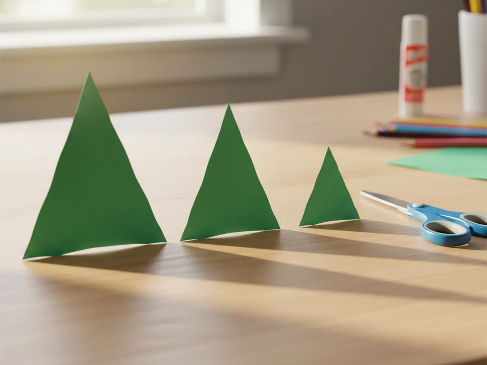
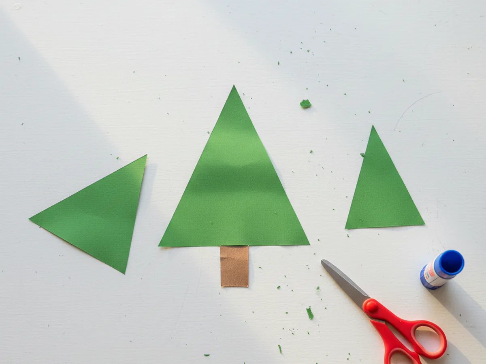
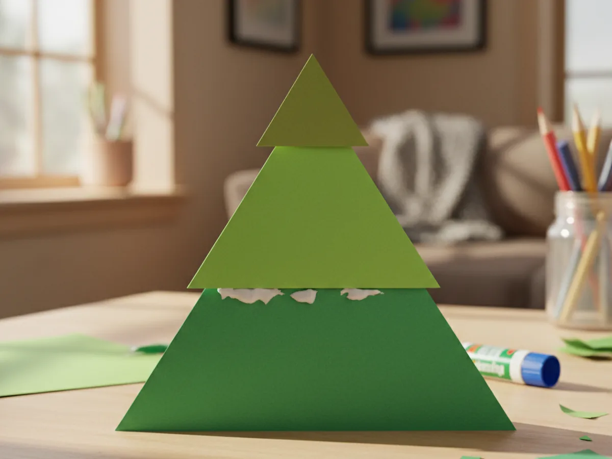
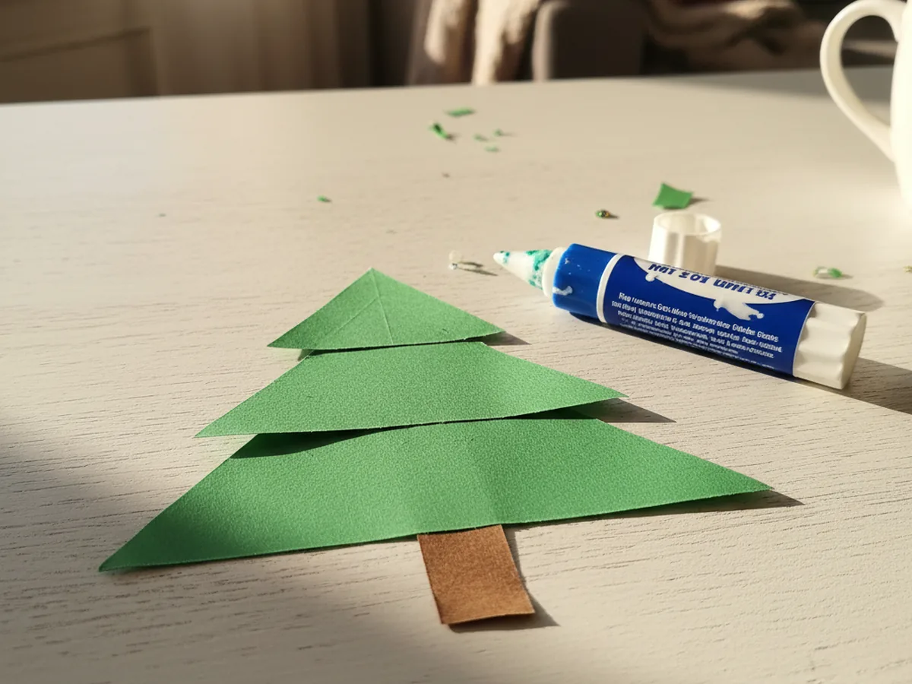
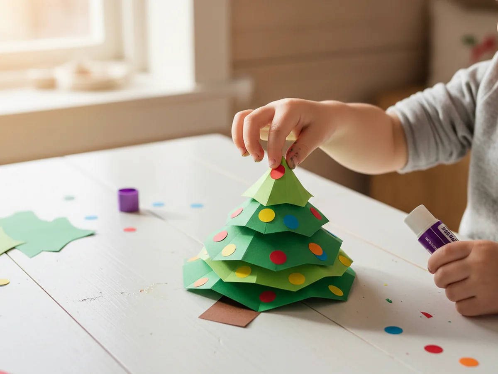
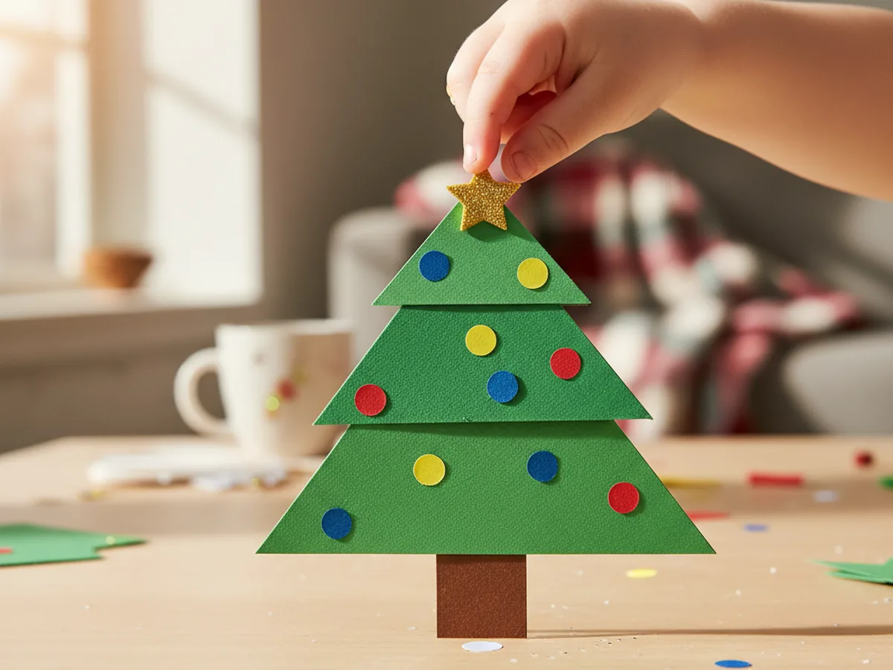

This simple paper Christmas tree craft is one of those projects where the setup takes about two minutes and the smiles last all afternoon. You cut a few green triangles, stack them into a tree shape, add some colorful ornaments, and press on a star. That is genuinely all there is to it. The finished tree looks adorable on a windowsill, a fridge door, or a holiday card, and your child gets to say they made it themselves. 🎄
This tutorial is designed for kids age 3 and up working alongside a mom or caregiver. Toddlers love tearing the ornament paper and pressing stickers. Older kids can do most of the cutting independently. Either way, you will end up with a sweet little festive craft and a happy child by your side.
Why Kids Love This Craft
The layered triangle shape of a Christmas tree is one of the most satisfying things a young child can build from paper. Each piece feels distinct, and watching the three stacked triangles transform into a recognizable tree the moment they line them up is genuinely exciting for little ones. That moment of recognition, where they see the tree appear, is pure magic at age three or four.
This paper Christmas tree craft also gives children a real sense of creative ownership. The ornament step is completely open, so kids choose the colors, decide how many dots to add, and place everything exactly where they want it. There is no wrong way to decorate a tree, which means every child ends up with something that feels personal and special to them.
From a developmental angle, this craft quietly builds fine motor control through cutting, tearing, and placing small paper pieces. It also reinforces color recognition and basic spatial thinking as children figure out how to arrange the triangles from largest to smallest. And because the whole project is done in about 30 minutes with almost no mess, it is easy to say yes to on a busy December afternoon.
What You'll Need
Here is everything you need to make your paper Christmas tree craft at home.
- Green cardstock or construction paper, one or two sheets for cutting the tree triangles
- Brown construction paper, one small piece for the trunk
- Colorful paper scraps, for cutting small ornament circles in red, yellow, blue, or any mix your child loves
- Gorilla Kids Glue Sticks, goes on purple and dries clear so kids can see what they have covered
- Fiskars Training Scissors, blunt-tip safety scissors perfect for kids age 3 and up
- Gold star stickers, self-adhesive foam stars for the tree topper, no cutting needed
- A pencil, optional for tracing triangle shapes before cutting
Step-by-Step Instructions
Take it one step at a time and you will have a beautiful little tree in no time. Let your child help at every stage, even if it is just pressing the pieces flat.
Step 1: Cut the Green Triangles
Start by cutting three triangles from your green paper in three different sizes. The largest triangle will become the bottom layer of the tree, the medium one goes in the middle, and the smallest sits at the very top. You do not need to be precise here. A rough triangle shape with a wide flat base works perfectly, and slightly uneven edges actually give the tree a charming handmade look. If your child is learning to cut, draw the triangle outlines lightly in pencil first and let them follow the lines. For toddlers, you can do the cutting while they watch and tell you which shape is "the biggest one."

Step 2: Cut the Trunk
Cut a small rectangle from your brown paper for the tree trunk. A shape roughly one inch wide and one and a half inches tall is all you need. This piece is tiny and easy to cut, so it is a great step to hand off to a young child who is still building their scissor confidence. If you do not have brown paper, a narrow strip of tan paper, dark cardboard, or even a short section of a paper towel roll works well too. The trunk is small so it does not need to be perfect.

Step 3: Stack and Glue the Tree Layers
Now for the satisfying part. Lay your three green triangles on the table and arrange them from largest at the bottom to smallest at the top, overlapping the top edge of each larger triangle slightly with the bottom of the one above it. Once you are happy with how they line up, run the glue stick along the overlapping areas and press each triangle firmly down onto the one below it. Hold each join for about ten seconds. When you lift the whole thing up, you should have one connected layered tree shape. This is the moment where young children often gasp because suddenly it really looks like a Christmas tree.

Step 4: Attach the Trunk
Flip your paper tree over so the back is facing up. Apply a small amount of glue to the top face of the brown trunk rectangle and press it firmly against the center bottom edge of the largest triangle. Hold it for a few seconds, then flip the whole tree back over. The trunk should now peek out neatly below the base of the tree. If it slides a little, just nudge it back into place before the glue sets. This step takes about thirty seconds and makes the whole paper Christmas tree look complete even before the decorations go on.

Step 5: Add the Ornament Decorations
This is the step children look forward to most. Cut small circles from your colorful paper scraps, roughly the size of a large pea or a fingertip. Red, yellow, blue, orange, and pink all look wonderful against the green. Your child can tear the circles freehand if they are very young since rough edges actually look sweet. Then hand them the glue stick and let them place the dots wherever they like on the tree branches. There is no pattern to follow. Some kids add dozens of ornaments, some add three. Both are perfect. This is their tree and it should look exactly the way they want it to. 🌟

Step 6: Add the Star Topper
The finishing touch is the star. Press a self-adhesive gold foam star onto the very top point of the smallest triangle. If you are using the Christmas star stickers from the supply list, they go on in one easy press and look exactly like a real tree topper. If you prefer a paper star, cut a small five-pointed star from yellow or gold paper and glue it on. Give it a moment to dry, then hold up your finished paper Christmas tree craft and admire it together. You both made that. ⭐

Variations to Try
Mini Tree Card: Make a smaller version of the tree on a folded piece of cardstock to turn it into a handmade Christmas card. Cut the triangles about half the normal size, decorate, and write a message inside. Kids feel incredibly proud giving a card they made themselves.
Tissue Paper Ornaments: Instead of cutting paper circles, let your child tear small pieces of colorful tissue paper, scrunch them slightly, and glue them on as ornaments. The texture looks beautiful and tearing tissue paper is fantastic sensory play for toddlers.
Glitter and Sticker Version: For an extra festive look, let your child add a few dot stickers, foam stickers, or a light sprinkle of glitter glue to the tree before it dries. This version is especially popular around Christmas Eve when the excitement is at its peak.
Final Thoughts
A paper Christmas tree craft is one of those activities that sounds almost too simple, and then you sit down and do it together and realize it was exactly what you both needed. It is calm, it is creative, and it ends with something your child made with their own hands. Display it on the fridge, tape it to a window, or tuck it into a card for grandma. However you use it, the pride your child feels is completely real. Happy crafting, and happy holidays to your whole family. 🎅
More Crafts You'll Love
If your family enjoyed this project, here are two more festive paper crafts to try next.